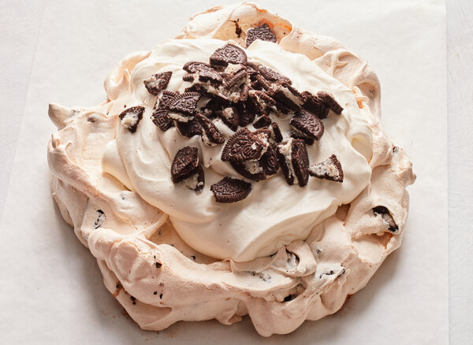

Home
Cookies & Cream Pavlova

Description
The story goes that Pavlova, a dessert which both Australia and New Zealand lay claim to, is named after the
prima
ballerina Anna Pavlova, who performed in both countries in the 1920s. Ms. Pavlova’s tutu, billowing round with
layers of
lace, is the inspiration for the creamy meringue dessert. This simple version combines a crackled, speckled
meringue
disk — crisp on the outside, chewy on the inside — and a swoopy crown of salted whipped cream. Fans of the
marshmallows
in Lucky Charms cereal will delight in this four-ingredient Pavlova, whose flavor is reminiscent of those hearts,
stars
and horseshoes. Here, the “cookies” in cookies-and-cream are, as ever, Oreos, which lend that dreamy teeter-totter
of
milky white and bittersweet black.
Ingredients
FOR THE MERINGUE:
- 4 large egg whites
- Pinch of salt
- 3/4 cup/151 grams granulated sugar
- 10 chocolate sandwich cookies (113 grams), such as Oreos
FOR THE TOPPING:
- 2 cups/480 milliliters heavy whipping cream
- 2 tablespoons granulated sugar
- Pinch of salt
- 5 chocolate sandwich cookies (57 grams), such as Oreos
PREPARATION
- Heat the oven to 250 degrees. Line a sheet pan with parchment paper.
- Make the meringue: In the bowl of a stand mixer fitted with a whisk attachment, add the egg whites and salt.
Whisk on
medium speed until frothy, about 1 minute. While the machine is still going, slowly add the sugar in a narrow
stream,
then raise the speed to high. Whisk the egg whites until glossy, stiff peaks form, about 4 minutes. When you
lift the
whisk out of the bowl and turn it upside-down, a meringue mountain peak should form without flopping over.
- Coarsely crush or chop the 10 cookies and add to the meringue. Gently stir with a rubber spatula or large
metal spoon
until the cookies ripple throughout.
- Mound the meringue onto the center of the parchment-lined sheet pan and, using the spatula or spoon, gently
form into a
round that’s about 8 to 9 inches wide and 2 to 3 inches high. You can encourage this shape by repeating a
circular
motion that swirls the meringue and creates lovely waves so the surface doesn’t look smooth. When you’re happy
with your
disk, make one final circular motion in the center to create an indent, where you’ll pool the whipped cream
later.
- Bake the meringue for 1 1/2 hours, then turn off the oven, leaving the door shut, and let the meringue finish
cooking in
the residual heat until crisp and dry on the outside with a springy, marshmallowy interior (but it should not be
wet),
15 to 30 minutes. Remove the meringue from the oven and let it sit on the counter to cool completely.
- While the meringue cools, make the topping: In a large, clean bowl or in the stand mixer (with a clean bowl),
whisk
together the heavy cream, sugar and salt until billowy soft peaks form. When you turn the whisk upside-down, a
peak of
cream should flop over slightly like a Santa hat.
- Pile the whipped cream on top of the cooled meringue, leaving a border, and top the cream with the 5 cookies,
crushing
them over the cream with your hands or chopping them and sprinkling them on top. Slice and serve the Pavlova
like a
cake.